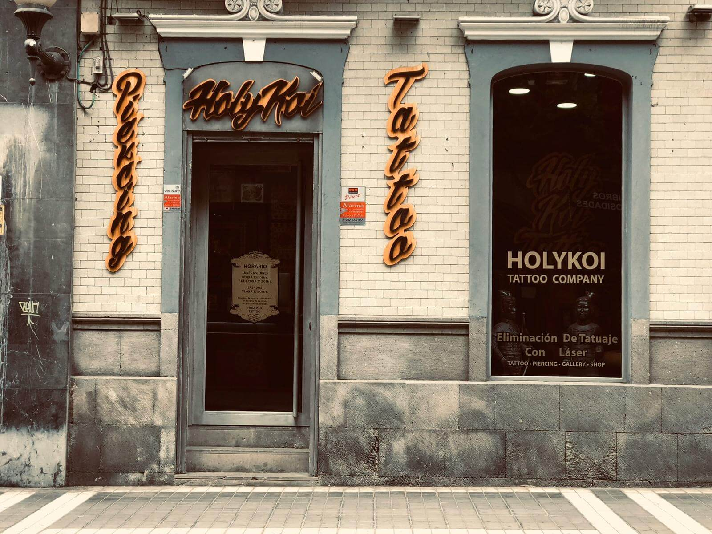
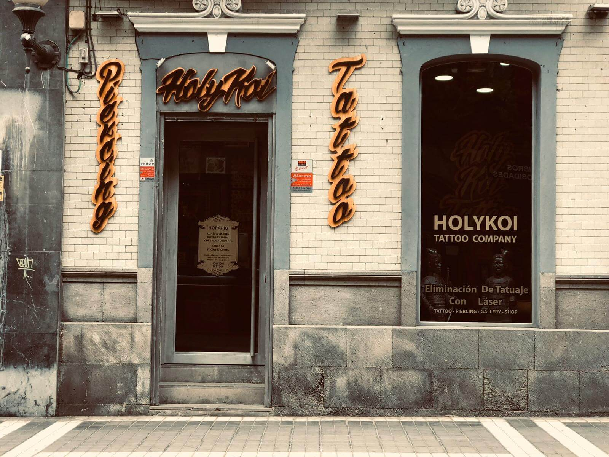

BIENVENIDOS A HOLY KOI TATTOO
HOLY KOI TATTOO es un estudio de Tattoos que se encuentra ubicado en Vecindario, Gran canaria, dispone de unas instalaciones muy higiénicas y ofrece a su clientela una alta calidad de trabajos, seriedad y profesionalidad, tanto en la atención como en la parte artística, con un equipo cuantificado para ello, y cada uno con distintas especialidades para que puedas plasmar en tu piel lo que sueñes y que quede de la misma forma. En Holy Koi Tattoo valoramos mucho el higiene y por eso es que contamos con todas las medidas sanitarias reglamentarias y profesionales que las cumplen de la manera correcta, para que tu experiencia en nuestro estudio sea excelente.

Arturo, nacido en Rosario (Argentina), comenzó su andadura como Tatuador profesional sobre los años 1997/1998,en su ciudad natal,después de llevar varios años tatuando y practicando el arte del tatueje con amigos, familiares, aprendiendo poco a poco.En el año 2001,decide viajar a Europa, a las islas Canarias precisamente, y empieza a trabajar con unos de los pioneros de la isla, (HANS VAN DE BOOR) en CANARY TATTOO, donde tiene la posibilidad de viajar y conocer nuevas tendencias y grandes artistas. En el año 2006, Arturo, decide abrir su propio estudio y es entonces cuando nace HOLY KOI TATTOO, creado con mucho esfuerzo y dedicación
 
